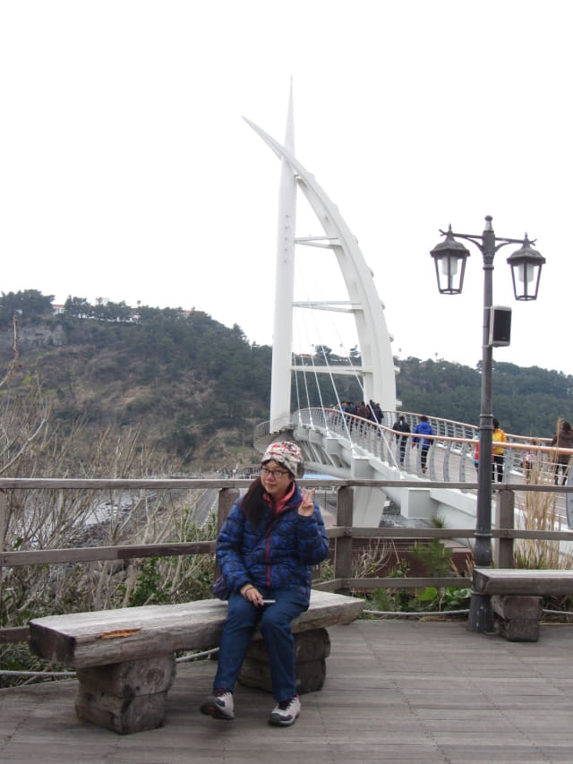
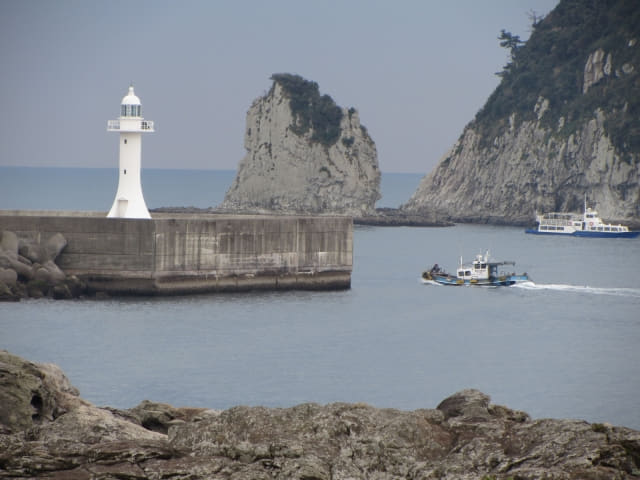

走過韓國最南端、最長的新緣橋, 來到鳥島。在橋頭的休憩場地稍作休息, 發覺大部份旅客在這裡拍照留念後便立即匆匆掉頭離開, 算是來了鳥島, 完成任務。千里迢迢來到, 我們當然不會就這樣離開, 我們會沿步道把鳥島環島一周, 這才算真正遊覽了鳥島。

休息了一會, 接著沿橋頭旁的步道往下走。
新緣橋不時在樹林間閃出。

突然間, 又灑下一陣雨, 弄濕了相機。
往上走了一會, 迎面是一個分叉路口, 右邊的步道是以逆時針方向環島一周, 左邊的步道則是相反方向。看見右邊步道的樹林比較濃密, 可以避雨, 便循那方向走。
步道用木板鋪設, 十分好走。
又看到山坡下的新緣橋。
一直往前走, 步道彎彎曲曲的穿梭於叢林間。
拐個彎, 步道好像通往大海中的。
走出了樹林間的步道, 豁然開朗, 來到了鳥島的海邊。
蚊岛 (문섬), 也稱文島, 就在海中, 和鳥島遙遙對望。
接著是一段平坦的泥土步道。
沿途風景十分秀麗。如果是天晴的日子, 必定流連忘返, 在這裡欣賞黃昏及日落景色才離去。

保護西歸浦港的兩道長堤, 和盡頭處迄立的紅白燈塔, 景色十分優美。
一邊走, 一邊看著船隻進出西歸浦港, 感覺十分過癮的。

泥土步道後是另一段木板步道。
又是另一段泥土步道。一群旅客突然間急速從後面衝前, 擦身而過, 嚇了一跳。

接著是最後一段的木板道。
西歸浦港就在右邊, 差不多返回起點了。
又看到新緣橋, 剛好把鳥島以逆時針方向環島一周。
離開鳥島前拍合照留念。